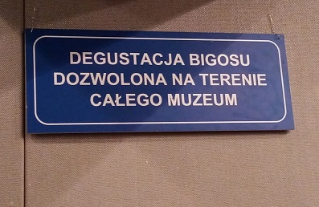
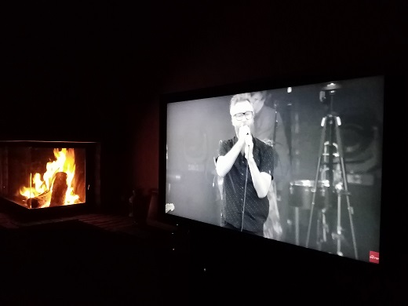

Jestem facetem w średnim wieku, który przechodzi właśnie mentalny kryzys wzmiankowanego wieku
i szuka inspiracji i sensu dalszego funkcjonowania na tym łez padole.
Z myślą, że życie to nie tylko pogoń za "dularami"!
No i nauczyć chciałbym się jeszcze w życiu czegoś, no!
Poza tym lubię inteligentny żart

The National

oraz jazdę na rowerze
Moja nauka frontendu yeah! Oto moja nowa eksploracja
Kim jestem?
Początki i pierwsze przemyślenia
Na razie ciekawostki ale ciekawe. Jako, że coś tam próbowałem tworzyć w VBA, to wygląda to mi
nawet
znajomo, oczywiście toutes proportions gardees bo realnie rzecz biorąc nic nie umiem (na razie).
Ale ciekawe jest już dowiedzieć się co jest pod spodem czyli jak się wyświetla to, co widzimy na
stronie.
Źle, że nie miałem więcej czasu na ten materiał ale teraz zamierzam przysiąść do tego bardziej –
wiedza!
Mam wątpliwości czy to jest dla mnie ale na razie idziemy dalej.
Po trzech tygodniach wiem na pewno, że spokojnie mogę polecić kurs Maćka Korsana.
Szczegóły znajdziecie tutaj: WTF